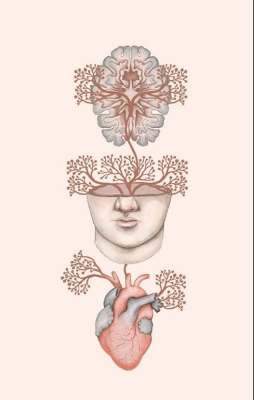

BAJADA El acceso a la información que tenemos hoy en día nos permite conocer sobre (casi) todo, y, mirando el lado positivo, nos ayuda a encontrar maneras alternativas y tips para cambiar nuestro estilo de vida, entre muchísimas cosas más.
Pero, hoy en Bindi, venimos a hablar de algo que no sé habla, y es que el exceso de exigencia nos aleja de la salud. Es muy común en este tiempo obsesionarnos con la dieta saludable, el ejercicio, la apariencia, etc. Y a veces, terminamos descuidando nuestro cuerpo, convirtiendo un buen objetivo en algo nocivo para nosotrxs.
Cuando nos ponemos en el lugar de exigencia, nuestro cuerpo dispara hormonas de estrés que no nos permiten estar presentes ni conectar con la plenitud, y por el contrario, afectan al corazón y al resto de nuestro organismo. Entonces, se pierde el sentido de lo “saludable”, y terminamos perjudicándonos.
Esto se vuelve un círculo vicioso en donde creemos que nuestros esfuerzos no son suficientes y nos exigimos aún más, convirtiendo la salud en una carga.
Por eso, desde Bindi siempre alentamos el lifestyle saludable, pero teniendo en cuenta el cuerpo como algo integral. Es decir, tomando conciencia de qué nos alimentamos, pero también de cómo alimentamos nuestro espíritu. De nada sirve obsesionarse con “comer bien” si estamos en una exigencia que nos provoca estrés y no nos permite digerir esos alimentos nutritivos.
Por ejemplo, los antiguos agradecían la comida antes de comer, esta práctica predisponía a la persona de otra manera, relacionada con la gratitud, la calma y un orden interno que preparaba al cuerpo para procesar el alimento. Cuidar la salud también es:
Pensar ¿qué tipo de emociones y pensamientos estoy alimentando?
Permitirnos desde la flexibilidad y no la culpa, para que lo perfecto no se oponga a lo bueno.
Entonces, te proponemos que te animes a probar un estilo de vida que favorezca tu bienestar en todos los aspectos, porque cuando nos percibimos como partes separadas y nos obsesionamos con una de ellas, generamos desequilibrio en el resto.
Como seres integrales, es necesario vernos de manera holística, teniendo en cuenta cuerpo, mente y espíritu, para que lo saludable sea verdaderamente saludable.
Y vos, ¿cómo estás cuidando tu salud?.